This is my first week. Wow. Back to school. It sounds both exciting and super-serious. So we can expect tears, blood and fun. Excellent. Good bye work-life balance.
---
---
Voila here is my absolute path from myHome to myNewSchool (Yes I am camelCasing everything now...
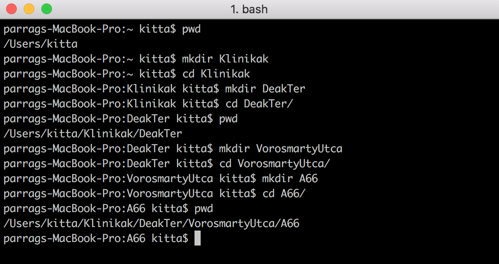---
What did take me almost a whole evening on second day now took me 5 seconds... I have become a gitCloneMaster!
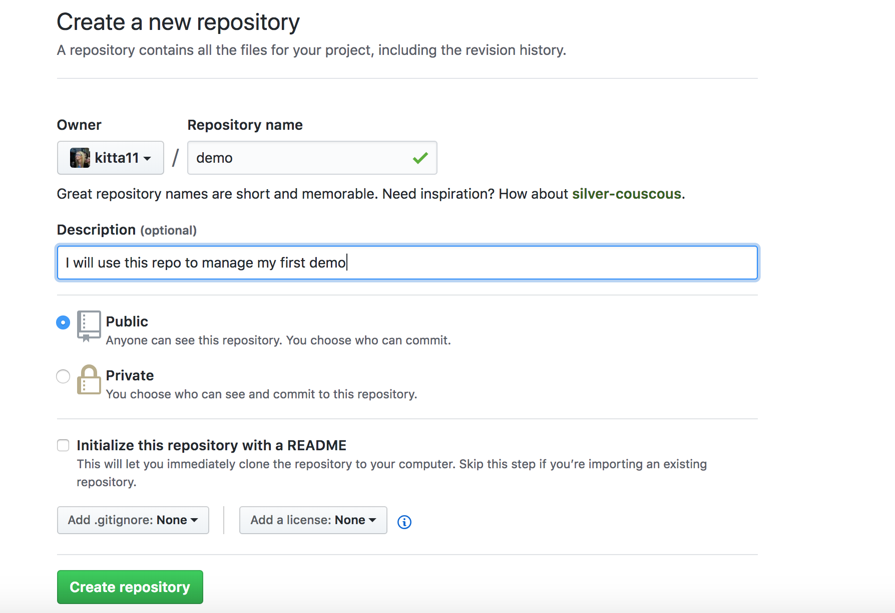 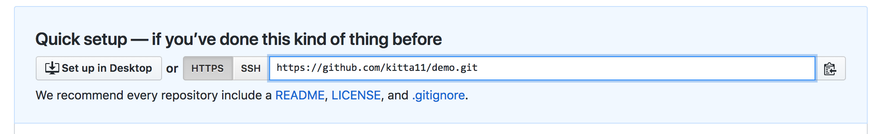 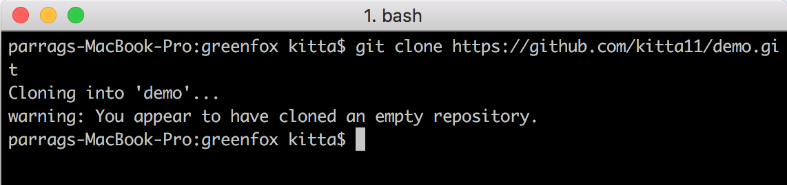---
On our first day training we played a game with our names. We had to add an alliteration to our first name in order to stick. After 4 days I still remember 90% of them and I created a names.txt in vim. Finally I have not forgotten to push the letter I in order to start editing. During the first day I could not exit vim. Now I can do the ESC : WQ magic in 10 seconds (still slow..I know). Achievement baby...
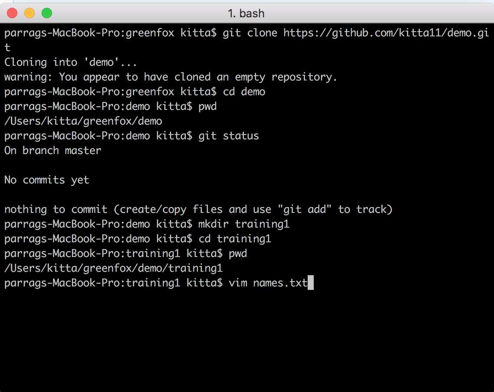 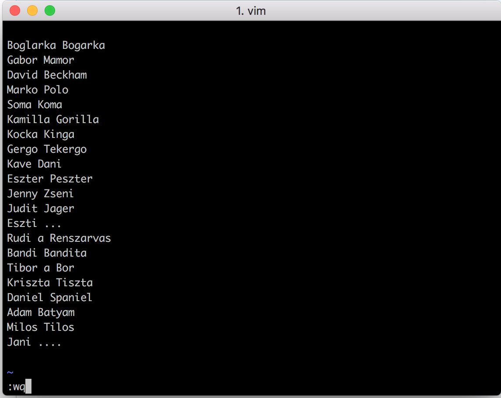This list of strings is an excellent material to practice SORT, GREP and stuff like this.
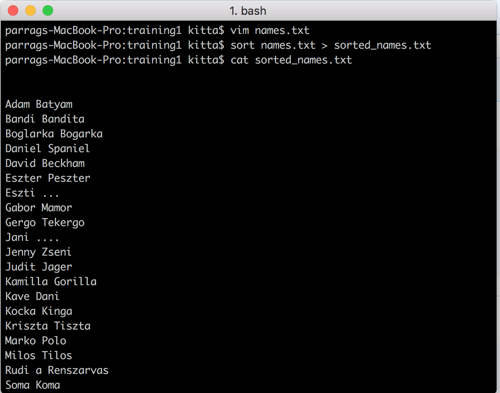 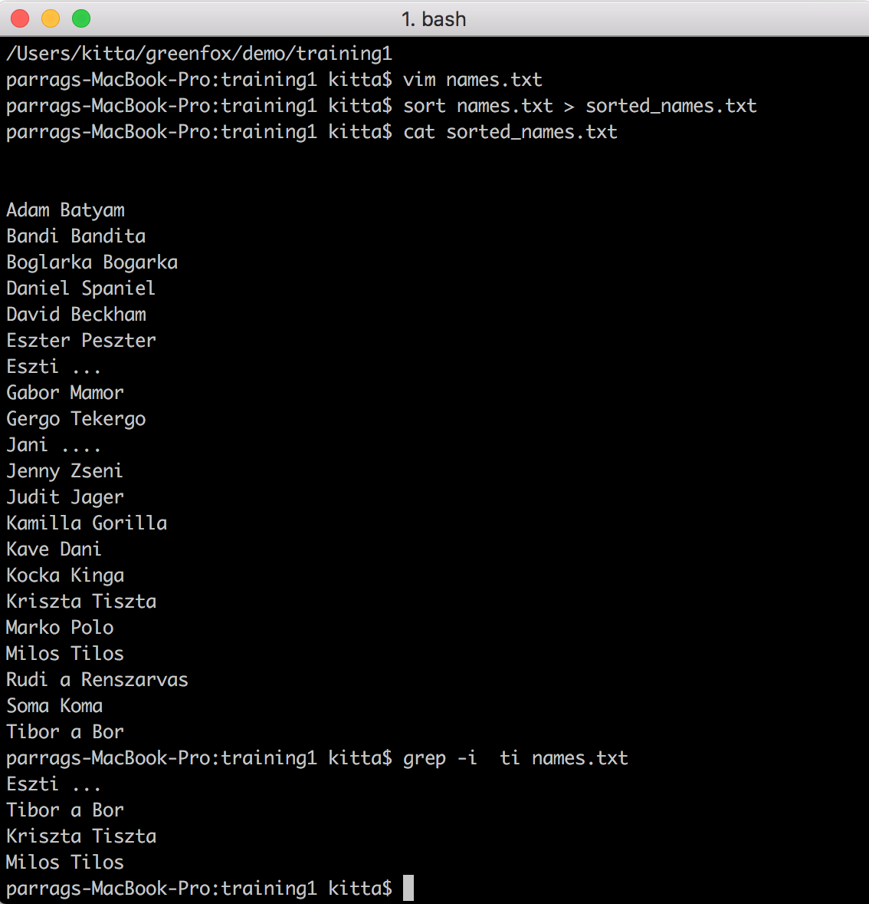---
During the demo preparation I had to create a tone of screenshots. And I broke with my habit of using Finder to manage these image files and moved them to my Firstwebsite Img folder with the help of the terminal. I have used some WILDCARDS too.
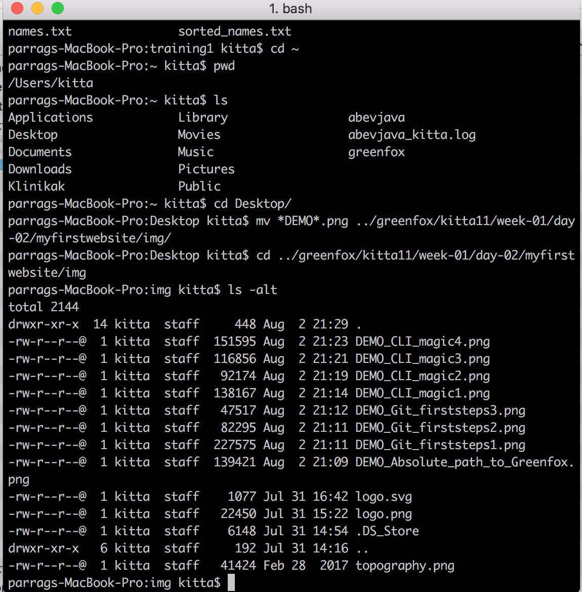---
Until this week I just heard about the action of code commit and push. Now I am a regular commiter and pusher. I am still working on the best commit messages.
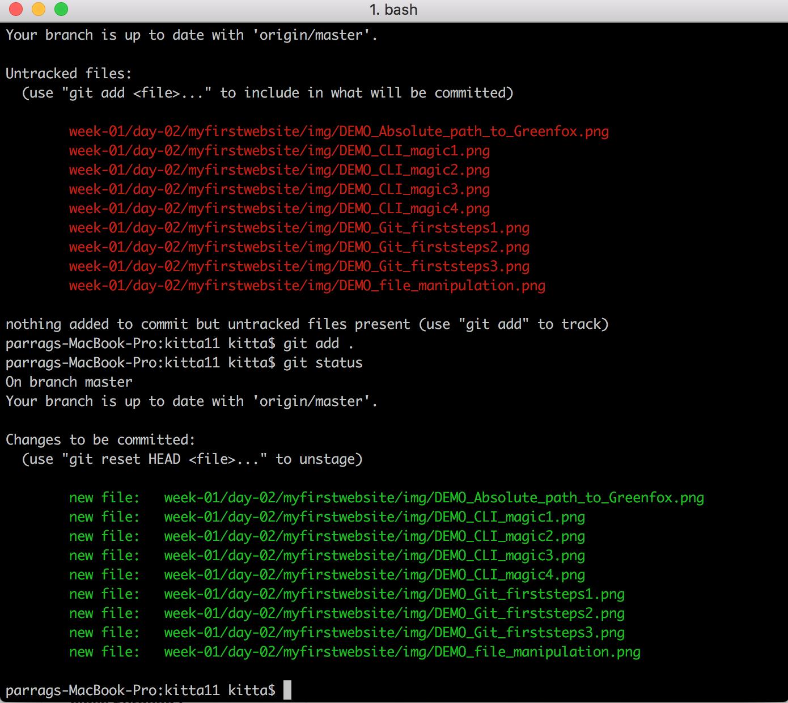 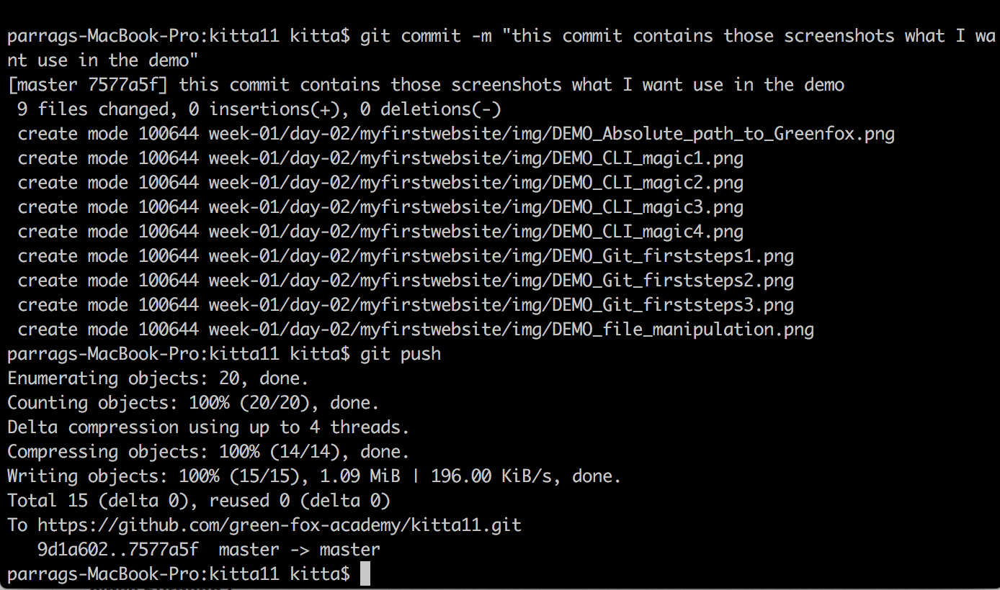---
I am not a padding and margin setting type. I want to play with grids. But I need to spend time learning them. But I run out of time for this week...
---
The triangle task pissed me off. Why TypeScript does not have a string.repeat feature? Is it a nested loop? Do I have to define the star string outside or inside the block. 6:25 PM aaaand yes....it is working
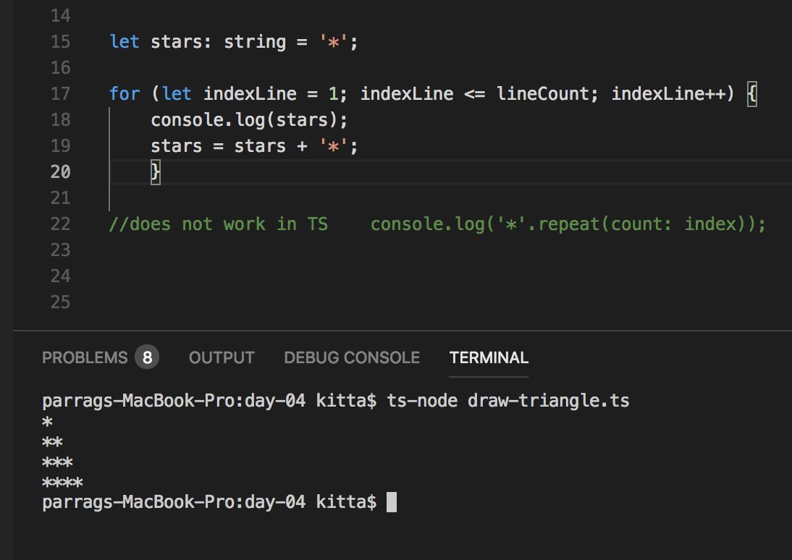It was fun. I hoped you enjoyed my first demo as much as I enjoyed my first week.
---
I have collected some quotes from the week:
---